Smooth Streaming on IIS 8 - 2017
To do smooth streaming, we'll do the following:
- Setup a iis 8 web server on my Windows 8.1 notebook.
- Install IIS Media Services which make the server to understand Smooth Stream.
- Of course, on the client side, we need silverlight.
- Playback via remote test server as well as localhost server.
In this secton, we'll learn how to do Smooth Streaming via IIS 8.
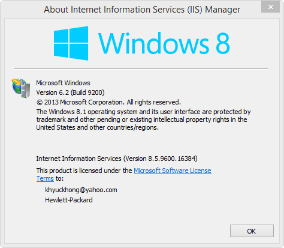IIS in Windows is an optional "Windows Feature". To install it, press the Windows + R key combination to bring up a run box, then type appwiz.cpl and press enter:
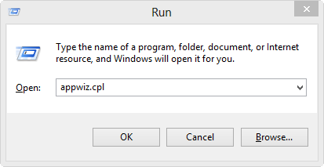This will open the Program and Features part of Control Panel, on the left hand side click on the "Turn Windows features on or off" link:
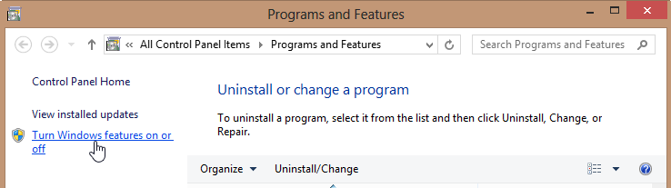By default it installs all the stuff needed to host a website:
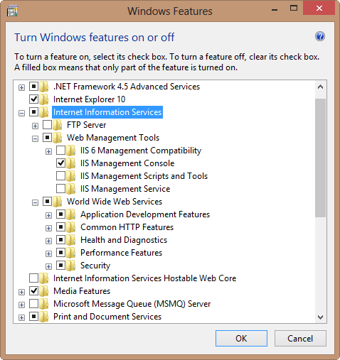After clicking OK, when we fire up our browser and navigate to localhost, we get:
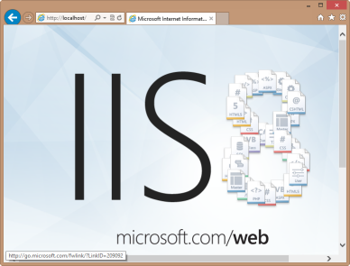Control Panel->Administrative Tools->Internet Information Services (IIS) Manager
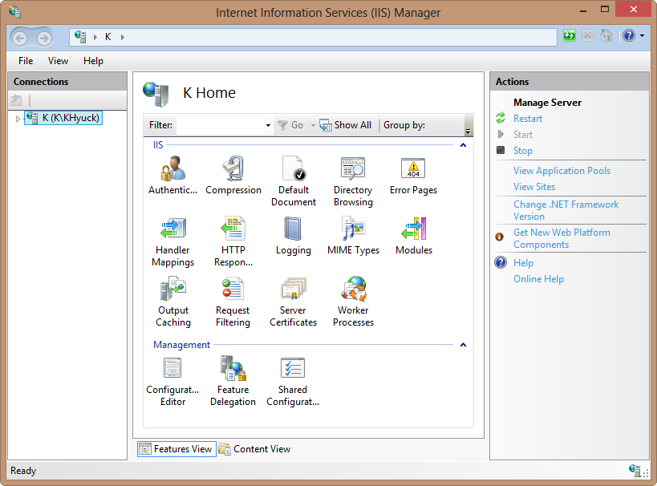Here is the default site settings:

We can change it to point other directory:
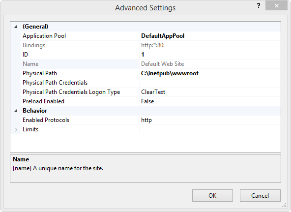IIS Media Services 4.1 64-bit download
IIS Media Services 4.1 readme is an integrated HTTP-based media delivery platform.
Integrates a media delivery platform with IIS to manage and administer delivery of rich media and other Web content.
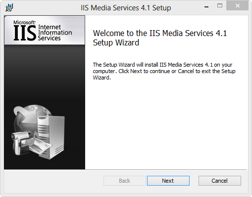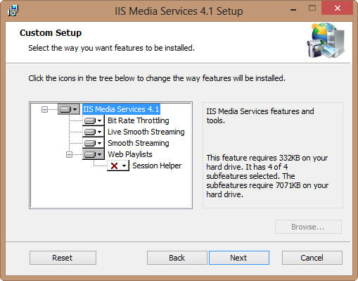
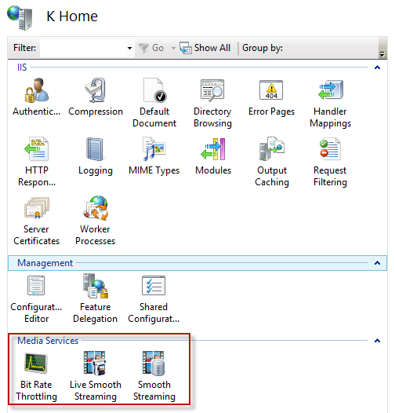
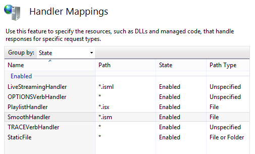
Here is the files after the iis media install:
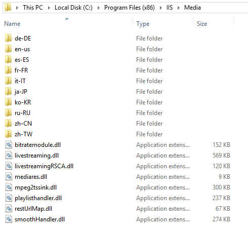IIS Smooth Streaming uses the MPEG-4 Part 14 (ISO/IEC 14496-12) file format as its disk (storage) and wire (transport) format.
The Smooth Streaming specification defines each chunk/GOP as an MPEG-4 Movie Fragment and stores it within a contiguous MP4 file for easy random access. One MP4 file for each bit rate, and it is a single full-length file per encoded bit rate.
When a client requests a specific source time segment from the IIS Web server, the server dynamically finds the appropriate Movie Fragment box within the contiguous MP4 file and sends it over the wire as a standalone file, thus ensuring full cacheability downstream.
There are actually two parts to the Smooth Streaming format:
- disk file format: a format which is recorded and stored
- wire format: chunks that are sent by IIS to the client
"Making it two parts are possible because MP4 specification allows MP4 to be internally organized as a series of fragments, which means that in Smooth Streaming the wire format is a direct subset of the file format.
The basic unit of an MP4 file is called a box. MP4 ISO Base Media File Format specification is designed to allow MP4 boxes to be organized in a fragmented manner, where the file can be written as we go as a series of short metadata/data box pairs, rather than one long metadata/data pair. The Smooth Streaming file format heavily leverages this aspect of the MP4 file specification, to the point where at Microsoft we often interchangeably refer to Smooth Streaming files as Fragmented MP4 files or (f)MP4".

Picture from IIS_Smooth_Streaming_Technical_Overview.pdf
The file starts with file-level metadata ('moov') that generically describes the file, but the bulk of the samples is actually contained in the fragment boxes that also carry more accurate fragment-level metadata ('moof') such as the information about sample locations and sample sizes and media data ('mdat') that contains the samples as described in the preceding moof box. Closing the file is an 'mfra' index box that allows easy and accurate seeking within the file."
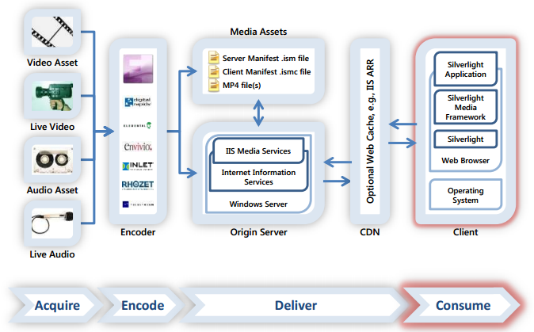Picture from Creating End-to-End Smooth Streaming Video Solutions with Silverlight and IIS Media Services
We can check the file structure using the following command:
$ MP4Box BigBuckBunny_230.ismv -diso
It will generate an xml file: BigBuckBunny_230_info.xml":
<?xml version="1.0" encoding="UTF-8"?>
<!--MP4Box dump trace-->
<IsoMediaFile Name="BigBuckBunny_230.ismv">
<FileTypeBox MajorBrand="isml" MinorVersion="1">
<BoxInfo Size="24" Type="ftyp"/>
<BrandEntry AlternateBrand="piff"/>
<BrandEntry AlternateBrand="iso2"/>
</FileTypeBox>
<MovieBox>
<BoxInfo Size="1292" Type="moov"/>
<MovieHeaderBox CreationTime="3358445268" ModificationTime="3358445268" TimeScale="10000000" Duration="5964741951" NextTrackID="3">
<BoxInfo Size="120" Type="mvhd"/>
<FullBoxInfo Version="1" Flags="0x0"/>
</MovieHeaderBox>
<MovieExtendsBox>
<BoxInfo Size="92" Type="mvex"/>
<MovieExtendsHeaderBox fragmentDuration="5964741951" >
<BoxInfo Size="20" Type="mehd"/>
<FullBoxInfo Version="1" Flags="0x0"/>
</MovieExtendsHeaderBox>
<TrackExtendsBox TrackID="1" SampleDescriptionIndex="1" SampleDuration="0" SampleSize="0">
<DefaultSampleFlags IsLeading="0" SampleDependsOn="0" SampleIsDependedOn="0" SampleHasRedundancy="0" SamplePadding="0" SampleSync="1" SampleDegradationPriority="0"/>
<BoxInfo Size="32" Type="trex"/>
<FullBoxInfo Version="0" Flags="0x0"/>
</TrackExtendsBox>
<TrackExtendsBox TrackID="2" SampleDescriptionIndex="1" SampleDuration="0" SampleSize="0">
<DefaultSampleFlags IsLeading="0" SampleDependsOn="0" SampleIsDependedOn="0" SampleHasRedundancy="0" SamplePadding="0" SampleSync="1" SampleDegradationPriority="0"/>
<BoxInfo Size="32" Type="trex"/>
<FullBoxInfo Version="0" Flags="0x0"/>
</TrackExtendsBox>
</MovieExtendsBox>
<TrackBox>
<BoxInfo Size="535" Type="trak"/>
<TrackHeaderBox CreationTime="3358445268" ModificationTime="3358445268" TrackID="1" Duration="5964741951" Volume="1.00">
<BoxInfo Size="104" Type="tkhd"/>
<FullBoxInfo Version="1" Flags="0x7"/>
</TrackHeaderBox>
<MediaBox>
<BoxInfo Size="423" Type="mdia"/>
<MediaHeaderBox CreationTime="3358445268" ModificationTime="3358445268" TimeScale="10000000" Duration="5964741951" LanguageCode="und">
<BoxInfo Size="44" Type="mdhd"/>
<FullBoxInfo Version="1" Flags="0x0"/>
</MediaHeaderBox>
<HandlerBox Type="soun" Name="Audio" reserved1="0" reserved2="data:application/octet-string,%00%00%00%00%00%00%00%00%00%00%00%00">
<BoxInfo Size="38" Type="hdlr"/>
<FullBoxInfo Version="0" Flags="0x0"/>
</HandlerBox>
<MediaInformationBox>
<BoxInfo Size="333" Type="minf"/>
<SoundMediaHeaderBox>
<BoxInfo Size="16" Type="smhd"/>
<FullBoxInfo Version="0" Flags="0x0"/>
</SoundMediaHeaderBox>
<DataInformationBox><BoxInfo Size="36" Type="dinf"/>
<DataReferenceBox>
<BoxInfo Size="28" Type="dref"/>
<FullBoxInfo Version="0" Flags="0x0"/>
<URLDataEntryBox>
<!--Data is contained in the movie file-->
<BoxInfo Size="12" Type="url"/>
<FullBoxInfo Version="0" Flags="0x1"/>
</URLDataEntryBox>
</DataReferenceBox>
</DataInformationBox>
<SampleTableBox>
<BoxInfo Size="273" Type="stbl"/>
<SampleDescriptionBox>
<BoxInfo Size="181" Type="stsd"/>
<FullBoxInfo Version="0" Flags="0x0"/>
<MPEGAudioSampleDescriptionBox DataReferenceIndex="1" SampleRate="44100" Channels="2" BitsPerSample="16">
<BoxInfo Size="165" Type="mp4a"/>
<MPEG4ESDescriptorBox>
<BoxInfo Size="129" Type="esds"/>
<FullBoxInfo Version="0" Flags="0x0"/>
<ES_Descriptor ES_ID="es0" >
<decConfigDescr>
<DecoderConfigDescriptor objectTypeIndication="64" streamType="5" bufferSizeDB="12288" maxBitrate="128000" avgBitrate="128000" >
<decSpecificInfo>
<DecoderSpecificInfo type="auto" src="data:application/octet-string,%12%10%08%C4%00%00%20%00%00%00%00%00%00%00%00%00%00%00%00%00%00%00%00%00%00%00%00%00%00%00%00%00%00%00%00%01%00%00%00%00%00%00%00%00%00%00%00%00%00%00%00%00%00%00%00%00%00%00%00%00%00%00%00%00%00%00%00%00%00%00%00%00%00%00%00%00%00%00%00%00" />
</decSpecificInfo>
</DecoderConfigDescriptor>
</decConfigDescr>
<slConfigDescr>
<SLConfigDescriptor >
<predefined value="2" />
<custom >
</custom>
</SLConfigDescriptor>
</slConfigDescr>
</ES_Descriptor>
</MPEG4ESDescriptorBox>
</MPEGAudioSampleDescriptionBox>
</SampleDescriptionBox>
<TimeToSampleBox EntryCount="0">
<BoxInfo Size="16" Type="stts"/>
<FullBoxInfo Version="0" Flags="0x0"/>
<!-- counted 0 samples in STTS entries -->
</TimeToSampleBox>
<CompositionOffsetBox EntryCount="0">
<BoxInfo Size="16" Type="ctts"/>
<FullBoxInfo Version="0" Flags="0x0"/>
<!-- counted 0 samples in CTTS entries -->
</CompositionOffsetBox>
<SampleToChunkBox EntryCount="0">
<BoxInfo Size="16" Type="stsc"/>
<FullBoxInfo Version="0" Flags="0x0"/>
<!-- counted 0 samples in STSC entries (could be less than sample count) -->
</SampleToChunkBox>
<SampleSizeBox SampleCount="0">
<BoxInfo Size="20" Type="stsz"/>
<FullBoxInfo Version="0" Flags="0x0"/>
<!--WARNING: No Sample Size indications-->
</SampleSizeBox>
<ChunkOffsetBox EntryCount="0">
<BoxInfo Size="16" Type="stco"/>
<FullBoxInfo Version="0" Flags="0x0"/>
<!--Warning: No Chunk Offsets indications-->
</ChunkOffsetBox>
</SampleTableBox>
</MediaInformationBox>
</MediaBox>
</TrackBox>
<TrackBox>
<BoxInfo Size="537" Type="trak"/>
<TrackHeaderBox CreationTime="3358445268" ModificationTime="3358445268" TrackID="2" Duration="5964166666" Width="224.00" Height="128.00">
<Matrix m11="0x00010000" m12="0x00000000" m13="0x00000000" m21="0x00000000" m22="0x00010000" m23="0x00000000" m31="0x00000000" m32="0x00000000" m33="0x40000000"/><BoxInfo Size="104" Type="tkhd"/>
<FullBoxInfo Version="1" Flags="0x7"/>
</TrackHeaderBox>
<MediaBox>
<BoxInfo Size="425" Type="mdia"/>
<MediaHeaderBox CreationTime="3358445268" ModificationTime="3358445268" TimeScale="10000000" Duration="5964166666" LanguageCode="und">
<BoxInfo Size="44" Type="mdhd"/>
<FullBoxInfo Version="1" Flags="0x0"/>
</MediaHeaderBox>
<HandlerBox Type="vide" Name="Video" reserved1="0" reserved2="data:application/octet-string,%00%00%00%00%00%00%00%00%00%00%00%00">
<BoxInfo Size="38" Type="hdlr"/>
<FullBoxInfo Version="0" Flags="0x0"/>
</HandlerBox>
<MediaInformationBox>
<BoxInfo Size="335" Type="minf"/>
<VideoMediaHeaderBox>
<BoxInfo Size="20" Type="vmhd"/>
<FullBoxInfo Version="0" Flags="0x1"/>
</VideoMediaHeaderBox>
<DataInformationBox><BoxInfo Size="36" Type="dinf"/>
<DataReferenceBox>
<BoxInfo Size="28" Type="dref"/>
<FullBoxInfo Version="0" Flags="0x0"/>
<URLDataEntryBox>
<!--Data is contained in the movie file-->
<BoxInfo Size="12" Type="url "/>
<FullBoxInfo Version="0" Flags="0x1"/>
</URLDataEntryBox>
</DataReferenceBox>
</DataInformationBox>
<SampleTableBox>
<BoxInfo Size="271" Type="stbl"/>
<SampleDescriptionBox>
<BoxInfo Size="179" Type="stsd"/>
<FullBoxInfo Version="0" Flags="0x0"/>
<AVCSampleEntryBox DataReferenceIndex="1" Width="224" Height="128" XDPI="4718592" YDPI="4718592" BitDepth="24">
<BoxInfo Size="163" Type="avc1"/>
<AVCConfigurationBox>
<AVCDecoderConfigurationRecord configurationVersion="1" AVCProfileIndication="100" profile_compatibility="64" AVCLevelIndication="13" nal_unit_size="4" chroma_format="0" luma_bit_depth="0" chroma_bit_depth="0">
<SequenceParameterSet size="53" content="data:application/octet-string,%67%64%00%0D%AC%2C%A5%0E%11%BF%F0%40%00%3F%05%20%C0%C0%C8%00%44%AA%18%0C%DF%E6%03%00%00%1C%12%00%03%82%73%F8%C7%18%00%00%E0%90%00%1C%13%9F%C6%38%76%84%89%45%80"/>
<PictureParameterSet size="5" content="data:application/octet-string,%68%E9%09%35%25"/>
</AVCDecoderConfigurationRecord>
<BoxInfo Size="77" Type="avcC"/>
</AVCConfigurationBox>
</AVCSampleEntryBox>
</SampleDescriptionBox>
<TimeToSampleBox EntryCount="0">
<BoxInfo Size="16" Type="stts"/>
<FullBoxInfo Version="0" Flags="0x0"/>
<!-- counted 0 samples in STTS entries -->
</TimeToSampleBox>
<CompositionOffsetBox EntryCount="0">
<BoxInfo Size="16" Type="ctts"/>
<FullBoxInfo Version="0" Flags="0x0"/>
<!-- counted 0 samples in CTTS entries -->
</CompositionOffsetBox>
<SampleToChunkBox EntryCount="0">
<BoxInfo Size="16" Type="stsc"/>
<FullBoxInfo Version="0" Flags="0x0"/>
<!-- counted 0 samples in STSC entries (could be less than sample count) -->
</SampleToChunkBox>
<SampleSizeBox SampleCount="0">
<BoxInfo Size="20" Type="stsz"/>
<FullBoxInfo Version="0" Flags="0x0"/>
<!--WARNING: No Sample Size indications-->
</SampleSizeBox>
<ChunkOffsetBox EntryCount="0">
<BoxInfo Size="16" Type="stco"/>
<FullBoxInfo Version="0" Flags="0x0"/>
<!--Warning: No Chunk Offsets indications-->
</ChunkOffsetBox>
</SampleTableBox>
</MediaInformationBox>
</MediaBox>
</TrackBox>
</MovieBox>
<MovieFragmentBox TrackFragments="1">
<BoxInfo Size="867" Type="moof"/>
<MovieFragmentHeaderBox FragmentSequenceNumber="1">
<BoxInfo Size="16" Type="mfhd"/>
<FullBoxInfo Version="0" Flags="0x0"/>
</MovieFragmentHeaderBox>
<TrackFragmentBox>
<BoxInfo Size="843" Type="traf"/>
<TrackFragmentHeaderBox TrackID="1" BaseDataOffset="file" SamplePadding="0" SampleSync="1" SampleDegradationPriority="2">
<BoxInfo Size="20" Type="tfhd"/>
<FullBoxInfo Version="0" Flags="0x20"/>
</TrackFragmentHeaderBox>
<SampleDependencyTypeBox SampleCount="87">
<BoxInfo Size="99" Type="sdtp"/>
<FullBoxInfo Version="0" Flags="0x0"/>
<SampleDependencyEntry dependsOnOther="no" dependedOn="no" hasRedundancy="unknown" />
...
<SampleDependencyEntry dependsOnOther="no" dependedOn="no" hasRedundancy="unknown" />
</SampleDependencyTypeBox>
<TrackRunBox SampleCount="87" DataOffset="875">
<BoxInfo Size="716" Type="trun"/>
<FullBoxInfo Version="0" Flags="0x301"/>
<TrackRunEntry Duration="232199" Size="441"/>
...
<TrackRunEntry Duration="232199" Size="456"/>
</TrackRunBox>
</TrackFragmentBox>
</MovieFragmentBox>
<MediaDataBox dataSize="39758">
<BoxInfo Size="39766" Type="mdat"/>
</MediaDataBox>
<MovieFragmentBox TrackFragments="1">
<BoxInfo Size="858" Type="moof"/>
<MovieFragmentHeaderBox FragmentSequenceNumber="2">
<BoxInfo Size="16" Type="mfhd"/>
<FullBoxInfo Version="0" Flags="0x0"/>
</MovieFragmentHeaderBox>
<TrackFragmentBox>
<BoxInfo Size="834" Type="traf"/>
<TrackFragmentHeaderBox TrackID="1" BaseDataOffset="file" SamplePadding="0" SampleSync="1" SampleDegradationPriority="2">
<BoxInfo Size="20" Type="tfhd"/>
<FullBoxInfo Version="0" Flags="0x20"/>
</TrackFragmentHeaderBox>
<SampleDependencyTypeBox SampleCount="86">
<BoxInfo Size="98" Type="sdtp"/>
<FullBoxInfo Version="0" Flags="0x0"/>
<SampleDependencyEntry dependsOnOther="no" dependedOn="no" hasRedundancy="unknown" />
...
</SampleDependencyTypeBox>
<TrackRunBox SampleCount="86" DataOffset="866">
<BoxInfo Size="708" Type="trun"/>
<FullBoxInfo Version="0" Flags="0x301"/>
...
</TrackRunBox>
</TrackFragmentBox>
</MovieFragmentBox>
<MediaDataBox dataSize="15015">
<BoxInfo Size="15023" Type="mdat"/>
</MediaDataBox>
<UnknownBox>
<BoxInfo Size="11434" Type="mfra"/>
</UnknownBox>
</IsoMediaFile>
When a player client requests a video time slice from the IIS Web server, the server seeks to the appropriate starting fragment in the MP4 file and then lifts the fragment out of the file and sends it over the wire to the client. This is why we refer to the fragments as the "wire format."
The wire format looks like this: one fragment = moof + mdat:
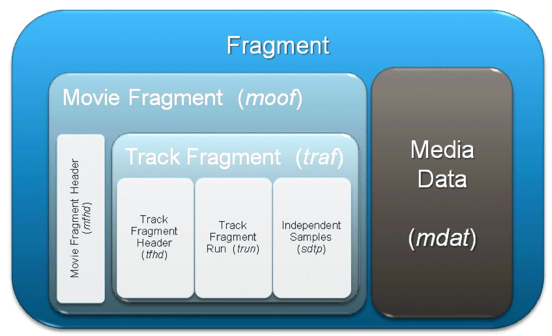To differentiate Smooth Streaming files from "vanilla" MP4 files, two file extensions are used: *.ismv (video+audio) and *.isma (audio only).:
- ism: Server manifest file
Describes the relationships between the media tracks, bit rates and files on disk - ismc: Client manifest file
Descibes the available streams to the client: the codecs, bit rates encoded, video resolutions, markers, captions, etc.
It's the first file delivered to the client. - ismv: Fragmented MPEG-4 video and audio, or only video file, 1 ismv file per encoded video bit rate
- isma*: contains only audio file
In videos with audio, the audio track can be muxed into an ixmv file instead pif a separate isms file
Here is a sample Bunny_H264_720p.zip :
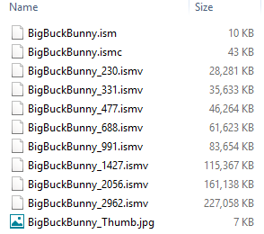
Of course, we need silverlight!
http://www.microsoft.com/silverlight/.

A clients plays the stream by requesting segments in a profile from a Web server, downloading them via HTTP. As the segments are downloaded, the client plays back the segments in the order requested. Since the segments are sliced along GOP boundaries with no gaps between, video playback is seamless - even though it is actually just a collection of independent file downloads via a sequence of HTTP GET requests. In other words, the fragmented MPEG-4, where each "chunk" of video is transmitted as a moof fragment starting with a Closed GOP, via a single HTTP request.
Adaptive delivery enables a client to adapt to fluctuating network conditions by selecting video segments from different profiles. The client can easily compute the available network bandwidth by comparing the download time of a segment with its size.
If the client has a list of available profile bitrates (or resolutions or codecs), it can determine if it must change to a lower bitrate/resolution profile or whether the available bandwidth allows it to download segments from a higher bitrate/resolution profile. This list of available profiles is called a manifest or playlist. The client's bandwidth calculation is repeated at every chunk download, and so the client can adapt to changing network bandwidth or other conditions every few seconds.
Smooth streaming protocol uses 4 different messages:
- Manifest request (HTTP "GET" method)
- Manifest response (This response is a ismc manifest file describing the session)
The client also receives the number of chunks for audio and video tracks and the duration of each chunks so that it can request the chunk that fits. - Fragment request (HTTP "GET" method based on RESTFull url)
The url includes reference to bitrate as QualityLevels that maps to a media file. It also includes a reference to a fragment number.http://server/BigBuckBunny.ism/QualityLevels(477000)/Fragments(video=610275114)
- Fragment response
Sends the requests fragment to the client as HTTP response with status code 200.
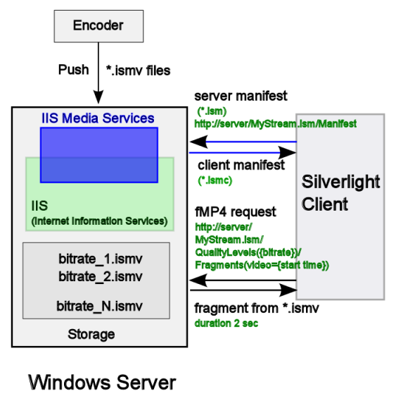
As discussed earlier, the videos are no longer split up into thousands of file chunks, but are instead "virtually" split into fragments (typically one fragment per video GOP) and stored within a single contiguous MP4 file. This implies two significant changes in server and client design:
- The server must translate URL requests into exact byte range offsets within the MP4 file.
- The client can request chunks in a more developer-friendly manner (for example, by timecode instead of by index number)
Here is the BigBuckBunny.ism file:
<?xml version="1.0" encoding="utf-16"?>
<!--Created with Expression Encoder version 4.0.1628.0-->
<smil xmlns="http://www.w3.org/2001/SMIL20/Language">
<head>
<meta
name="clientManifestRelativePath"
content="BigBuckBunny.ismc" />
<metadata
id="meta-rdf">
<rdf:RDF xmlns:dcterms="http://purl.org/dc/terms/" xmlns:iisms="http://schemas.microsoft.com/iis/media/v4#" xmlns:wm="http://schemas.microsoft.com/windowsmedia/v11/attributes#" xmlns:ee="http://schemas.microsoft.com/expression/encoder/v4#" xmlns:eecustom="http://schemas.microsoft.com/expression/encoder/v4/custom#" xmlns:rdf="http://www.w3.org/1999/02/22-rdf-syntax-ns#" xmlns:rdfs="http://www.w3.org/2000/01/rdf-schema#">
<ee:MediaItem
rdf:about="guid:f48d286e-5f2e-44e2-91cf-be2044ab4553">
<ee:ID>f48d286e-5f2e-44e2-91cf-be2044ab4553</ee:ID>
<ee:HasAttachedImages>False</ee:HasAttachedImages>
<ee:HasCaptions>False</ee:HasCaptions>
<ee:HasAudio>True</ee:HasAudio>
<ee:HasImage>False</ee:HasImage>
<ee:HasVideo>True</ee:HasVideo>
<ee:IsProtected>False</ee:IsProtected>
<ee:IsVBR>False</ee:IsVBR>
<ee:Streams>9</ee:Streams>
<ee:Duration>00:09:56.4583334</ee:Duration>
</ee:MediaItem>
</rdf:RDF>
</metadata>
</head>
<body>
<switch>
<video
src="BigBuckBunny_2962.ismv"
systemBitrate="2962000">
<param
name="trackID"
value="2"
valuetype="data" />
<param
name="trackName"
value="video"
valuetype="data" />
<param
name="timeScale"
value="10000000"
valuetype="data" />
</video>
<video
src="BigBuckBunny_2056.ismv"
systemBitrate="2056000">
<param
name="trackID"
value="2"
valuetype="data" />
<param
name="trackName"
value="video"
valuetype="data" />
<param
name="timeScale"
value="10000000"
valuetype="data" />
</video>
<video
src="BigBuckBunny_1427.ismv"
systemBitrate="1427000">
<param
name="trackID"
value="2"
valuetype="data" />
<param
name="trackName"
value="video"
valuetype="data" />
<param
name="timeScale"
value="10000000"
valuetype="data" />
</video>
<video
src="BigBuckBunny_991.ismv"
systemBitrate="991000">
<param
name="trackID"
value="2"
valuetype="data" />
<param
name="trackName"
value="video"
valuetype="data" />
<param
name="timeScale"
value="10000000"
valuetype="data" />
</video>
<video
src="BigBuckBunny_688.ismv"
systemBitrate="688000">
<param
name="trackID"
value="2"
valuetype="data" />
<param
name="trackName"
value="video"
valuetype="data" />
<param
name="timeScale"
value="10000000"
valuetype="data" />
</video>
<video
src="BigBuckBunny_477.ismv"
systemBitrate="477000">
<param
name="trackID"
value="2"
valuetype="data" />
<param
name="trackName"
value="video"
valuetype="data" />
<param
name="timeScale"
value="10000000"
valuetype="data" />
</video>
<video
src="BigBuckBunny_331.ismv"
systemBitrate="331000">
<param
name="trackID"
value="2"
valuetype="data" />
<param
name="trackName"
value="video"
valuetype="data" />
<param
name="timeScale"
value="10000000"
valuetype="data" />
</video>
<video
src="BigBuckBunny_230.ismv"
systemBitrate="230000">
<param
name="trackID"
value="2"
valuetype="data" />
<param
name="trackName"
value="video"
valuetype="data" />
<param
name="timeScale"
value="10000000"
valuetype="data" />
</video>
<audio
src="BigBuckBunny_2962.ismv"
systemBitrate="160000">
<param
name="trackID"
value="1"
valuetype="data" />
<param
name="trackName"
value="audio"
valuetype="data" />
<param
name="timeScale"
value="10000000"
valuetype="data" />
</audio>
</switch>
</body>
</smil>
BigBuckBunny.ism file is a server manifest, which is structured in Synchronized Multimedia Integration Language (SMIL) format and contains a mapping of quality levels and bit rates to the .ismv and .isma files. This mapping in the server manifest is used by the server to access the right disk files to create the next fragment of content encoded at the right bit rate, before responding to a client side request.
Let's see how the iis media service renders the ism file.
When we set a url to a .ism file, it won't work. What we need to do is get the manifest. This is available by appending "/manifest" at the end of the url. This manifest is basically an Xml file containing the different feeds available. There are several different feeds involved. Each feed has its own bitrate. So when the player is playing, it can actually switch between feeds with different bitrates while playing. So the quality of the streamed video actually fluctuates while playing. - (see Playing Smooth Streaming (.ism) videos in Silverlight)
public void Play(string url)
{
AdaptiveStreamingSource src = new AdaptiveStreamingSource(myMediaElement,new Uri(url + "/manifest"));
myMediaElement.SetSource(src);
myMediaElement.Play();
}
As we see in code, we create a new AdaptiveStreamingSource passing in the MediaElement and the Uri to the .ism file. However, we need to add the /manifest at the end of the Uri. Then we use this source to set the source of the MediaElement. After that, the MediaElement will play just as normal.
Here is the result when we type in BigBuckBunny.ism/manifest. Depending on the browser, we have slight differences in rendering but basically containing the same info.
Chrome 31.0
<!-- Created with Expression Encoder version 4.0.1628.0 -->
<SmoothStreamingMedia MajorVersion="2" MinorVersion="1" Duration="5964583334">
<StreamIndex Type="video" Name="video" Chunks="299" QualityLevels="8" MaxWidth="1280" MaxHeight="720" DisplayWidth="1280" DisplayHeight="720" Url="QualityLevels({bitrate})/Fragments(video={start time})">
<QualityLevel Index="0" Bitrate="2962000" FourCC="H264" MaxWidth="1280" MaxHeight="720" CodecPrivateData="000000016764001FAC2CA5014016EFFC100010014808080A00112A860337F980C100005A648000B4C9FE31C6080002D3240005A64FF18E1DA12251600000000168E9093525"/>
<QualityLevel Index="1" Bitrate="2056000" FourCC="H264" MaxWidth="992" MaxHeight="560" CodecPrivateData="000000016764001FAC2CA503E047BFF040003FC5202020280044AA180CDFE603030003EBE8000FAFAFE31C6060007D7D0001F5F5FC6387684894580000000168E9093525"/>
<QualityLevel Index="2" Bitrate="1427000" FourCC="H264" MaxWidth="768" MaxHeight="432" CodecPrivateData="000000016764001EAC2CA50300DEFFC100010014808080A00112A860337F980C0C000AE300002B8C7F8C718180015C600005718FF18E1DA12251600000000168E9093525"/>
<QualityLevel Index="3" Bitrate="991000" FourCC="H264" MaxWidth="592" MaxHeight="332" CodecPrivateData="0000000167640015AC2CA50250AFEFFF03FD0400520C0C0C80044AA180CDFE6030200078F80003C7C7F8C71810003C7C0001E3E3FC6387684894580000000168E9093525"/>
<QualityLevel Index="4" Bitrate="688000" FourCC="H264" MaxWidth="448" MaxHeight="252" CodecPrivateData="0000000167640015AC2CA507021FBFFC100010014830303200112A860337F980C080014FF0000A7F8FE31C604000A7F800053FC7F18E1DA12251600000000168E9093525"/>
<QualityLevel Index="5" Bitrate="477000" FourCC="H264" MaxWidth="368" MaxHeight="208" CodecPrivateData="000000016764000DAC2CA505C6EFFC10000FED4830303200112A860337F980C04003A3A0003A3A7F8C718080074740007474FF18E1DA1225160000000168E9093525"/>
<QualityLevel Index="6" Bitrate="331000" FourCC="H264" MaxWidth="284" MaxHeight="160" CodecPrivateData="000000016764000DAC2CA504857BFFF040003FE520C0C0C80044AA180CDFE60301000A198000A19FFE31C6020014330001433FFC6387684894580000000168E9093525"/>
<QualityLevel Index="7" Bitrate="230000" FourCC="H264" MaxWidth="224" MaxHeight="128" CodecPrivateData="000000016764000DAC2CA50E11BFF040003F0520C0C0C80044AA180CDFE60300001C1200038273F8C7180000E090001C139FC63876848945800000000168E9093525"/>
<c d="20000000"/>
<c d="20000000"/>
<c d="20000000"/>
...
<c d="20000000"/>
<c d="4166667"/>
</StreamIndex>
<StreamIndex Type="audio" Index="0" Name="audio" Chunks="299" QualityLevels="1" Url="QualityLevels({bitrate})/Fragments(audio={start time})">
<QualityLevel FourCC="AACL" Bitrate="160000" SamplingRate="44100" Channels="2" BitsPerSample="16" PacketSize="4" AudioTag="255" CodecPrivateData="121008C400002000000000000000000000000000000000000000000000000000000000010000000000000000000000000000000000000000000000000000000000000000000000000000000000000000"/>
<c d="20201360"/>
<c d="19969161"/>
<c d="19969161"/>
<c d="19969161"/>
<c d="19969161"/>
...
<c d="19969161"/>
<c d="19969161"/>
<c d="4643992"/>
</StreamIndex>
</SmoothStreamingMedia>
Internet Explorer 11
<?xml version="1.0" encoding="UTF-16"?>
<!--Created with Expression Encoder version 4.0.1628.0-->
<SmoothStreamingMedia Duration="5964583334" MinorVersion="1" MajorVersion="2">
<StreamIndex Url="QualityLevels({bitrate})/Fragments(video={start time})" Chunks="299" QualityLevels="8" Type="video" MaxHeight="720" MaxWidth="1280" DisplayHeight="720" DisplayWidth="1280" Name="video">
<QualityLevel CodecPrivateData="000000016764001FAC2CA5014016EFFC100010014808080A00112A860337F980C100005A648000B4C9FE31C6080002D3240005A64FF18E1DA12251600000000168E9093525" MaxHeight="720" MaxWidth="1280" FourCC="H264" Bitrate="2962000" Index="0"/>
<QualityLevel CodecPrivateData="000000016764001FAC2CA503E047BFF040003FC5202020280044AA180CDFE603030003EBE8000FAFAFE31C6060007D7D0001F5F5FC6387684894580000000168E9093525" MaxHeight="560" MaxWidth="992" FourCC="H264" Bitrate="2056000" Index="1"/>
<QualityLevel CodecPrivateData="000000016764001EAC2CA50300DEFFC100010014808080A00112A860337F980C0C000AE300002B8C7F8C718180015C600005718FF18E1DA12251600000000168E9093525" MaxHeight="432" MaxWidth="768" FourCC="H264" Bitrate="1427000" Index="2"/>
<QualityLevel CodecPrivateData="0000000167640015AC2CA50250AFEFFF03FD0400520C0C0C80044AA180CDFE6030200078F80003C7C7F8C71810003C7C0001E3E3FC6387684894580000000168E9093525" MaxHeight="332" MaxWidth="592" FourCC="H264" Bitrate="991000" Index="3"/>
<QualityLevel CodecPrivateData="0000000167640015AC2CA507021FBFFC100010014830303200112A860337F980C080014FF0000A7F8FE31C604000A7F800053FC7F18E1DA12251600000000168E9093525" MaxHeight="252" MaxWidth="448" FourCC="H264" Bitrate="688000" Index="4"/>
<QualityLevel CodecPrivateData="000000016764000DAC2CA505C6EFFC10000FED4830303200112A860337F980C04003A3A0003A3A7F8C718080074740007474FF18E1DA1225160000000168E9093525" MaxHeight="208" MaxWidth="368" FourCC="H264" Bitrate="477000" Index="5"/>
<QualityLevel CodecPrivateData="000000016764000DAC2CA504857BFFF040003FE520C0C0C80044AA180CDFE60301000A198000A19FFE31C6020014330001433FFC6387684894580000000168E9093525" MaxHeight="160" MaxWidth="284" FourCC="H264" Bitrate="331000" Index="6"/>
<QualityLevel CodecPrivateData="000000016764000DAC2CA50E11BFF040003F0520C0C0C80044AA180CDFE60300001C1200038273F8C7180000E090001C139FC63876848945800000000168E9093525" MaxHeight="128" MaxWidth="224" FourCC="H264" Bitrate="230000" Index="7"/>
<c d="20000000"/>
<c d="20000000"/>
<c d="20000000"/>
...
<c d="20000000"/>
<c d="20000000"/>
<c d="20000000"/>
<c d="4166667"/>
</StreamIndex>
<StreamIndex Url="QualityLevels({bitrate})/Fragments(audio={start time})" Chunks="299" QualityLevels="1" Type="audio" Index="0" Name="audio">
<QualityLevel CodecPrivateData="121008C400002000000000000000000000000000000000000000000000000000000000010000000000000000000000000000000000000000000000000000000000000000000000000000000000000000" FourCC="AACL" Bitrate="160000" AudioTag="255" PacketSize="4" BitsPerSample="16" Channels="2" SamplingRate="44100"/>
<c d="20201360"/>
<c d="19969161"/>
<c d="19969161"/>
<c d="19969161"/>
...
<c d="19969161"/>
<c d="19969161"/>
<c d="4643992"/>
</StreamIndex>
</SmoothStreamingMedia>
The server manifest also contains a mapping to a client manifest file (identified by the extension .ismc), which in my example is BigBuckBunny.ismc.
The first thing a player client requests from the Smooth Streaming server is the *.ismc client manifest, BigBuckBunny.ismc:
<?xml version="1.0" encoding="utf-16"?>
<!--Created with Expression Encoder version 4.0.1628.0-->
<SmoothStreamingMedia
MajorVersion="2"
MinorVersion="1"
Duration="5964583334">
<StreamIndex
Type="video"
Name="video"
Chunks="299"
QualityLevels="8"
MaxWidth="1280"
MaxHeight="720"
DisplayWidth="1280"
DisplayHeight="720"
Url="QualityLevels({bitrate})/Fragments(video={start time})">
<QualityLevel
Index="0"
Bitrate="2962000"
FourCC="H264"
MaxWidth="1280"
MaxHeight="720" CodecPrivateData="000000016764001FAC2CA5014016EFFC100010014808080A00112A860337F980C100005A648000B4C9FE31C6080002D3240005A64FF18E1DA12251600000000168E9093525" />
<QualityLevel
Index="1"
Bitrate="2056000"
FourCC="H264"
MaxWidth="992"
MaxHeight="560" CodecPrivateData="000000016764001FAC2CA503E047BFF040003FC5202020280044AA180CDFE603030003EBE8000FAFAFE31C6060007D7D0001F5F5FC6387684894580000000168E9093525" />
<QualityLevel
Index="2"
Bitrate="1427000"
FourCC="H264"
MaxWidth="768"
MaxHeight="432" CodecPrivateData="000000016764001EAC2CA50300DEFFC100010014808080A00112A860337F980C0C000AE300002B8C7F8C718180015C600005718FF18E1DA12251600000000168E9093525" />
<QualityLevel
Index="3"
Bitrate="991000"
FourCC="H264"
MaxWidth="592"
MaxHeight="332" CodecPrivateData="0000000167640015AC2CA50250AFEFFF03FD0400520C0C0C80044AA180CDFE6030200078F80003C7C7F8C71810003C7C0001E3E3FC6387684894580000000168E9093525" />
<QualityLevel
Index="4"
Bitrate="688000"
FourCC="H264"
MaxWidth="448"
MaxHeight="252" CodecPrivateData="0000000167640015AC2CA507021FBFFC100010014830303200112A860337F980C080014FF0000A7F8FE31C604000A7F800053FC7F18E1DA12251600000000168E9093525" />
<QualityLevel
Index="5"
Bitrate="477000"
FourCC="H264"
MaxWidth="368"
MaxHeight="208" CodecPrivateData="000000016764000DAC2CA505C6EFFC10000FED4830303200112A860337F980C04003A3A0003A3A7F8C718080074740007474FF18E1DA1225160000000168E9093525" />
<QualityLevel
Index="6"
Bitrate="331000"
FourCC="H264"
MaxWidth="284"
MaxHeight="160" CodecPrivateData="000000016764000DAC2CA504857BFFF040003FE520C0C0C80044AA180CDFE60301000A198000A19FFE31C6020014330001433FFC6387684894580000000168E9093525" />
<QualityLevel
Index="7"
Bitrate="230000"
FourCC="H264"
MaxWidth="224"
MaxHeight="128" CodecPrivateData="000000016764000DAC2CA50E11BFF040003F0520C0C0C80044AA180CDFE60300001C1200038273F8C7180000E090001C139FC63876848945800000000168E9093525" />
<c
d="20000000" />
<c
d="20000000" />
<c
d="20000000" />
...
<c
d="20000000" />
<c
d="20000000" />
<c
d="4166667" />
</StreamIndex>
<StreamIndex
Type="audio"
Index="0"
Name="audio"
Chunks="299"
QualityLevels="1"
Url="QualityLevels({bitrate})/Fragments(audio={start time})">
<QualityLevel
FourCC="AACL"
Bitrate="160000"
SamplingRate="44100"
Channels="2"
BitsPerSample="16"
PacketSize="4"
AudioTag="255"
CodecPrivateData="121008C400002000000000000000000000000000000000000000000000000000000000010000000000000000000000000000000000000000000000000000000000000000000000000000000000000000" />
<c
d="20201360" />
<c
d="19969161" />
<c
d="19969161" />
...
<c
d="19969161" />
<c
d="19969161" />
<c
d="4643992" />
</StreamIndex>
</SmoothStreamingMedia>
The client manifest contains all the information that the client will need to access the various media and data streams, as well as metadata about those streams, such as quality levels, available bit rates, timing information, codec initialization data and so on. In other words, client have a description of available bitrates\quality for live streaming, url that is necessary call to download content, actual status of live streaming with the list of the video and audio chunks available and the time code that drive the streaming and the duration of every chunk. The client-side logic will use this metadata to sample and decode the fragments and request bit rate switches based on prevailing local conditions.
At run time, the presentation begins with the client requesting the client manifest from the server. Once the client receives the manifest, it checks to see what bit rates are available and requests fragments of content starting at the lowest available bit rate. In response, the server prepares and sends the fragments by reading the data from the disk file encoded at that bit rate (using the mapping in the server manifest). The content is then displayed on the client.
The client gradually requests higher bit rates as allowed by the resource-monitoring logic, and eventually reaches the highest allowable bit rate as determined by the prevailing resource conditions. This interchange continues until the client's monitoring logic senses a change in resource conditions resulting in a different lower desired bit rate. Subsequent client requests are for media encoded at the new bit rate, and the server again responds accordingly. This goes on until the presentation completes or is stopped.
Each StreamIndex entry represents a stream and there can be multiple streams in the presentation.
For a given video stream in the client manifest, the video track is broken into many fragments of 2-second duration, and each c element in the manifest represents metadata for the fragment, and the fragments in the track are contiguous.
Each track in a client manifest is uniquely identified via a QualityLevel. A QualityLevel is identified by the associated bit rate. For example, a video stream in a client manifest may have several QualityLevels, each with a unique bit rate. Each represents a unique track of the same video content, encoded at the bit rate specified by the QualityLevel.
With IIS Smooth Streaming, clients request fragments in the form of a RESTful URL:
http://server/BigBuckBunny.ism/QualityLevels(477000)/Fragments(video=610275114)
The values passed in the URL represent encoded bit rate (477000) and the fragment start offset (610275114) expressed in an agreed-upon time unit (usually 100 nanoseconds (ns)). These values are known from the client manifest.
After receiving the client request, IIS Smooth Streaming looks up the quality level (bit rate) in the corresponding *.ism server manifest and maps it to a physical *.ismv or *.isma file on disk. It then reads the appropriate MP4 file, and based on its 'tfra' index box, figures out which fragment box ('moof' + 'mdat') corresponds to the requested start time offset. It then extracts the fragment box and sends it over the wire to the client as a standalone file.
I tested the playback in two ways: testing via a remote server and playback via a localhost server.
The difference is in the medial url in a given html for the silverlight plug-in:
- remote:
<param name="InitParams" value="selectedcaptionstream=textstream_eng, mediaurl=http://streams.smooth.vertigo.com/elephantsdream/Elephants_Dream_1024-h264-st-aac.ism/manifest" /> - localhost:
<param name="InitParams" value="selectedcaptionstream=textstream_eng, mediaurl=http://localhost/bunny/BigBuckBunny.ism/manifest" />
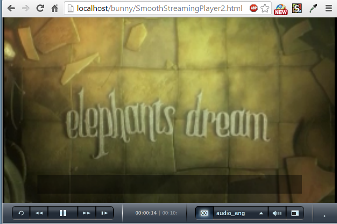
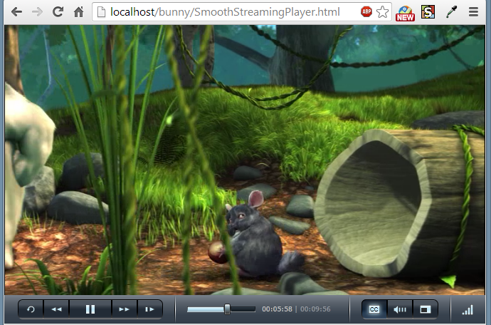
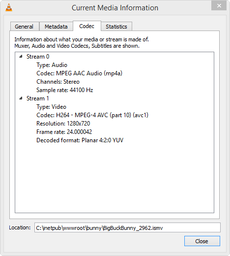
Here is the list of files used:
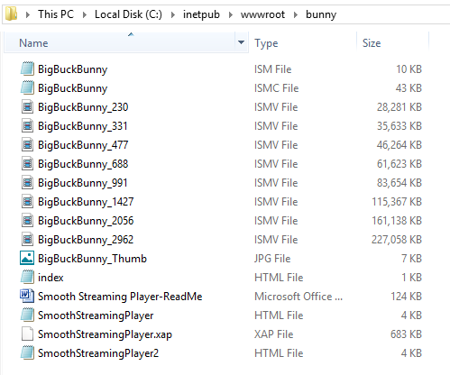We can get SmoothStreamingPlayer: here .
Zipped file: bunny.zip
Switching bit rate is implemented entirely in client-side Silverlight application code-the server plays no part in the bit-rate switching process. The client-side code looks at chunk download times, buffer fullness, rendered frame rates, and other factors, and decides when to request higher or lower bit rates from the server.
The following table shows a typical use case for the different output profiles :
| Width x Height | Bitrate |
|---|---|
| 1280 x 720 | 3 Mbits/s |
| 960 x 540 | 1.5 Mbits/s |
| 864 x 486 | 1.25 Mbits/s |
| 640 x 360 | 1.0 Mbits/s |
| 640 x 360 | 750 Kbits/s |
| 416 x 240 | 500 Kbits/s |
| 320 x 180 | 350 Kbits/s |
| 320 x 180 | 150 Kbits/s |
To maintain consistent video quality across all bitrates, we can use the following calculator. It is a Silverlight-based online calculator.
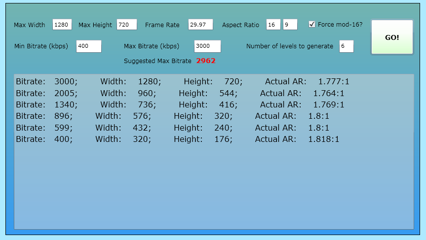

Live Smooth Streaming uses the same technique of on-demand Smooth Streaming, except encoded in real-time for live events by hardware encoders. Although it is similar in player concept, it is quite different in implementation.- Demystifying IIS Smooth Streaming / Live Smooth Streaming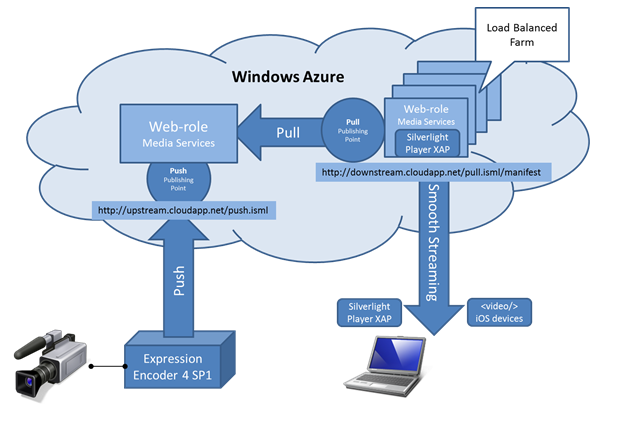
Picture from Windows Azure Live Smooth Streaming
Publishing Points:
Solution contains two predefined publishing points:
- Push.isml - to receive video stream from encoder
- Pull.isml - to pull video stream from Upstream Server
The picture shows how we can structure the servers and their roles: upstream(origin) server (aka ingest server) to which encoded contents pushed and downstream server which pulls the contents from the origin to distribute the contents. This picture does not directly related to setting up publishing point described article below, but it helps to understand the concept of push and pull contents.
We need to create a directory where we want to publish our contents.
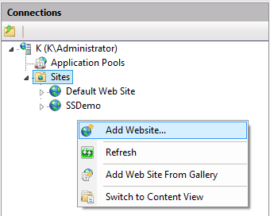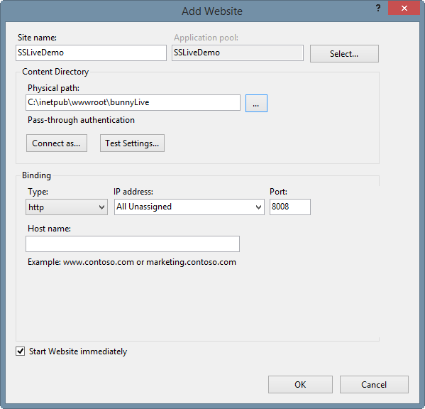
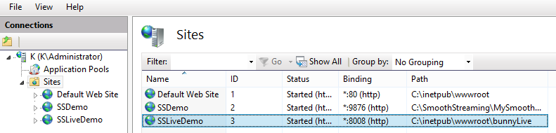
In IIS Manager, select the desired website and then double-click the Live Smooth Streaming Publishing Points icon.
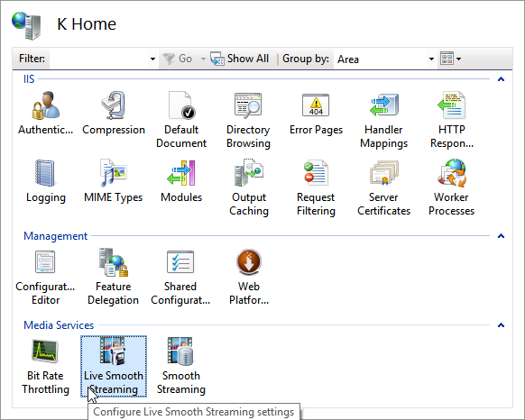Then, in the Actions pane, click Add.
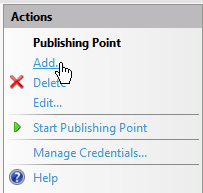In the Add Publishing Point dialog box, on the Basic Settings tab, enter the following information (we can name it whatever we want):
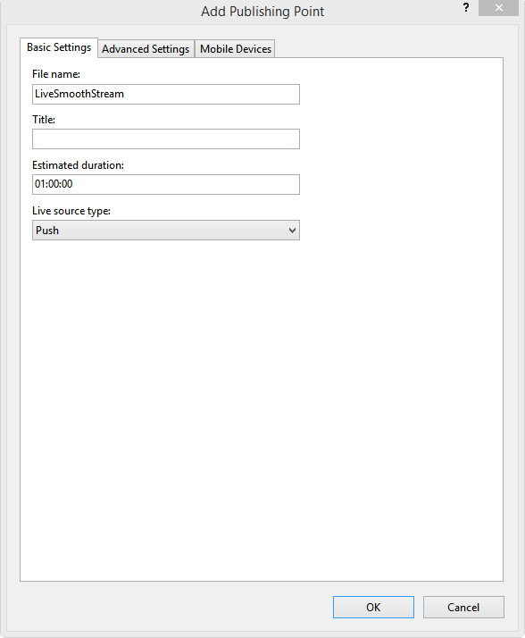- File name. Enter a name for the Live Smooth Streaming publishing point definition file.
- Estimated duration. If known, enter the duration (in hours:minutes:seconds) of the live event so that the Silverlight-based client can scale its Seek bar to the length of the content. In our example, we use an event duration of 1 hour (01:00:00).
- Live source type. In our example, the Live Smooth Streaming server is an "localhost" that receives the content that's pushed to it from an encoder; therefore, we select the default Push option.
On the Advanced Settings tab, select the Start publishing point automatically upon first client request check box. This setting allows an encoder to connect to the publishing point when the broadcast starts. Connection errors might occur if we don't enable this setting.
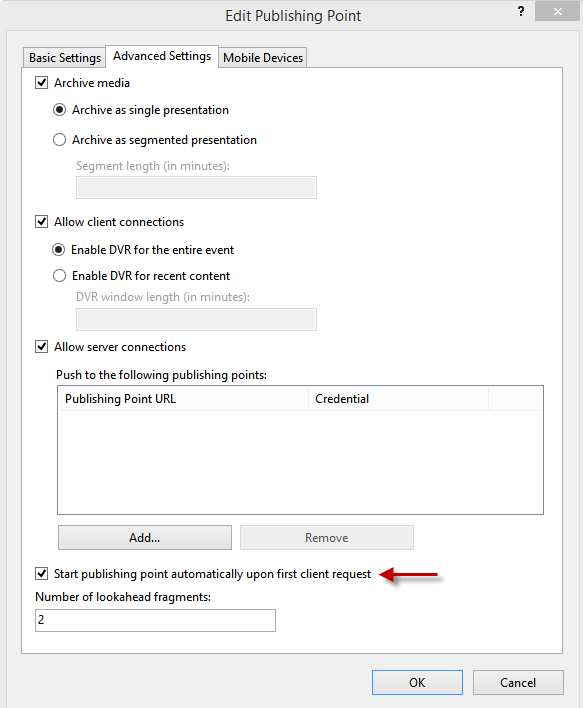
In the Add Publishing Point dialog box, click OK. A new Live Smooth Streaming publishing point definition file named LiveSmoothStream.isml is added to the website root.
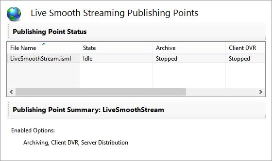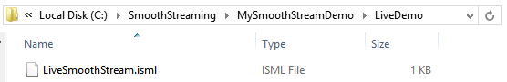
Live Smooth Streaming publishing points on the Web Server with IIS Live Smooth Streaming installed are used to deliver the fragmented MP4 output from encoders to Smooth Streaming-enabled clients.
When a client makes a request for a Live Smooth Streaming presentation, the publishing point on the Web server delivers an XML manifest that describes the available quality levels.
The client then uses the Smooth Streaming heuristics to determine the best stream from which to request a media fragment at that instant. The Smooth Streaming heuristics continuously monitor the environment and at frequent intervals (typically 2 seconds), request the next contiguous MP4 fragment in the live stream.
On the Live Smooth Streaming Publishing Points page, select the publishing point, and then in the Actions pane, click Start Publishing Point.
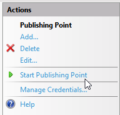The publishing point State value changes from Idle to Starting, which means it's waiting for external data (in this case, a live stream pushed to it from an encoder). In other words, the Starting state means that the publishing point is ready to receive live streams.
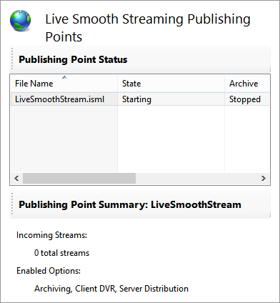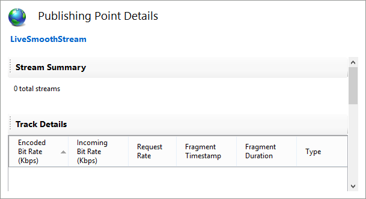
Because we haven't configured an encoder to push live streams to the publishing point yet, the Publishing Point Summary panel shows that there are no incoming streams.
When the live source connects to the publishing point and begins pushing content to it, the Starting state changes to Started, meaning that the publishing point is receiving the live streams.
Note that the Summary panel for Live Smooth Streaming publishing points in IIS Media Services 4 displays summary information about the live Smooth Streams that are received from all live sources (such as encoders or other Live Smooth Streaming publishing points) by the selected publishing point. You can also view details about the tracks within all of the live streams, and stream origin and destination information, in the Publishing Point Details page.
Here is the LiveSmoothStream.isml generated:
<?xml version="1.0" encoding="utf-8"?>
<smil xmlns="http://www.w3.org/2001/SMIL20/Language">
<head>
<meta name="title" content="" />
<meta name="module" content="liveSmoothStreaming" />
<meta name="sourceType" content="Push" />
<meta name="publishing" content="Fragments;Streams;Archives" />
<meta name="estimatedTime" content="3600" />
<meta name="lookaheadChunks" content="2" />
<meta name="manifestWindowLength" content="0" />
<meta name="startOnFirstRequest" content="True" />
<meta name="archiveSegmentLength" content="0" />
<meta name="formats" content="" />
<meta name="filters" content="" />
</head>
<body>
</body>
</smil>
Please visit Live Broadcasting Smooth Streaming to see how to create a Live Smooth Streaming broadcast in Microsoft Expression Encoder 4 and push it to the Live Smooth Streaming publishing point that we configured in the previous section.
As soon as Expression Encoder push contents, the state will be changed to Started from Starting. So, leave it at Starting state for now.
Let's move on to the Encoder.(Live Broadcasting Smooth Streaming )
- Microsoft Media Platform Content Map
- IIS_Smooth_Streaming_Technical_Overview.pdf
- Smooth_Streaming_Deployment_Guide.pdf
- [MS-SSTR]: Smooth Streaming Protocol
- Creating End-to-End Smooth Streaming Video Solutions with Silverlight and IIS Media Services
- http://www.iis.net/learn/media
- IIS Media Services 4.1 released!
- Installing and Setting Up and Encoding for IIS 7 Smooth Streaming and Silverlight
- Comparing Adaptive HTTP Streaming Technologies
- Adaptive Bitrate Technology - Cisco
- Demystifying IIS Smooth Streaming / Live Smooth Streaming
- Smooth Streaming FAQ
- Extending Smooth Streaming Reach
- IIS Media Services: Live Smooth Streaming, Fault Tolerance and Architecture
- Windows Azure Live Smooth Streaming
- Encoders - unified-streaming
Note: Output from Smooth Streaming is highly optimized to be hosted and delivered from a Microsoft IIS web server where it supports advanced features like fast forward, rewind, metadata/binary track etc. Smooth Streaming can also be hosted on any Apache web server with the correct configuration. There are a variety of third-party and open source binaries to speed up your Apache configuration for Smooth Streaming.- Microsoft Smooth Streaming.
For playing back, please visit FFmpeg Smooth Streaming
For Expression Encoder, please visit Expression Encoder
Ph.D. / Golden Gate Ave, San Francisco / Seoul National Univ / Carnegie Mellon / UC Berkeley / DevOps / Deep Learning / Visualization